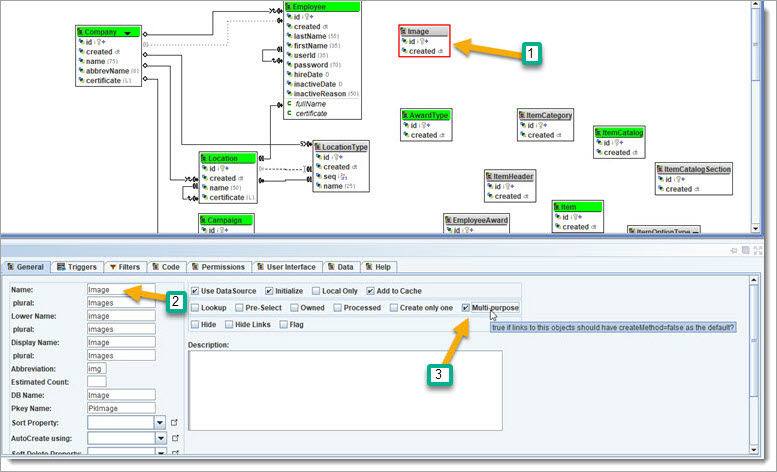

Go to the "Flags" tab and check "Image".
Next, let us add an Image Object to the Model. We will use it as a multi purpose place to store images. Initially, we use it for Employee photos and signatures.
Create a new Model Object and name it "Image". Click the checkbox for "multi-purpose".

Create the following property (type BLOB) to store the image.
Go to the
"Flags" tab and check "Image".
Now create a link between Employee and Image, set type to OneToOne.
 Regen and rerun.
Regen and rerun.

Image editor.